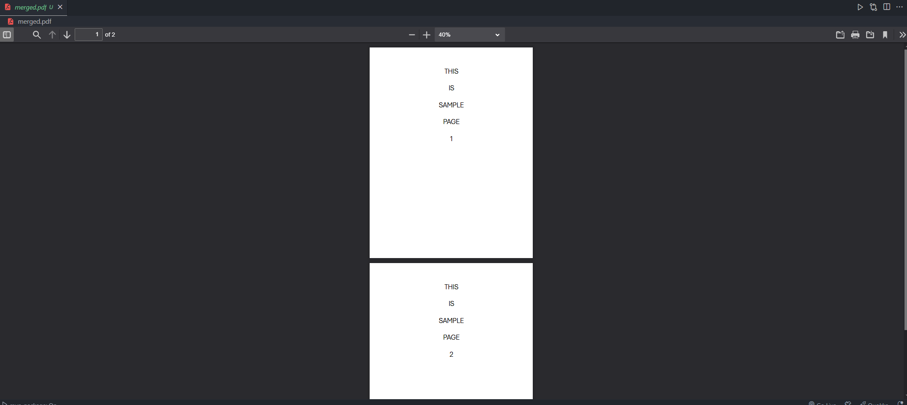
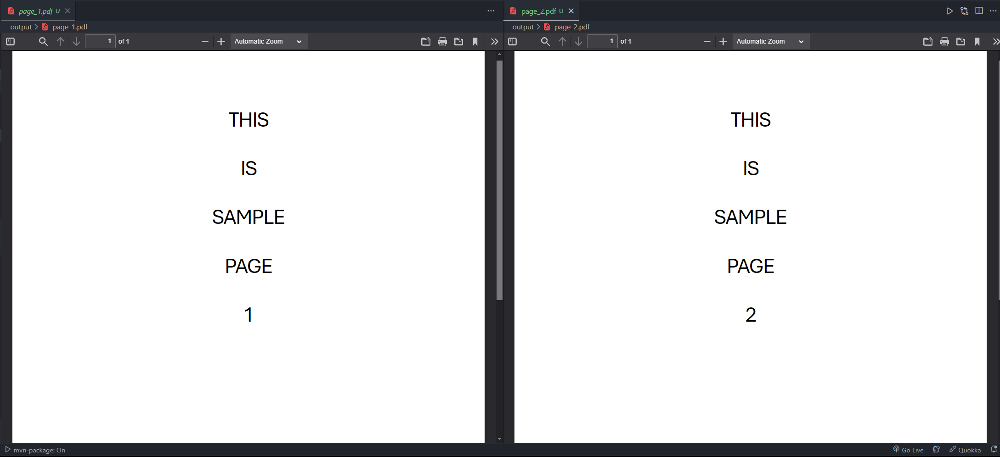

This Python tool allows you to merge multiple PDF files into one or split a PDF into individual pages. It's easy to use, practical, and saves a lot of time when dealing with PDFs.
Merged PDF
Split PDF
To use this tool on your local machine, follow these steps:
pip install PyPDF2.